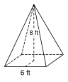
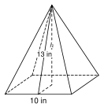
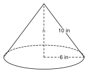
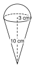

8.5 - Volume of Pyramids, Cones, and Spheres
A truck dumps a pile of sand. The pile has the shape of a cone. How much sand is in it? A farm has a grain silo with a round dome on top. How much grain can it hold?
These solids come to a point or curve all around. They need new formulas. In this lesson you find the volume of pyramids, cones, spheres, and solids made from them.
Printable Guided Notes for this lesson (fill-in notes to print and write on)
🔥 Warm Up
Find the volume of a cylinder with radius \(3\) and height \(5\). Give the exact answer.
A right triangle has one leg \(5\) and hypotenuse \(13\). Find the other leg.
Solve \(\frac{4}{3}x = 36\).
👥 Learn Together
8.5.1 - Pyramids and Cones
Take a pyramid and a prism with the same base and the same height. Fill the pyramid with water and pour it into the prism. You need to pour three times to fill the prism. The same is true for a cone and a cylinder.

So a pyramid or cone holds one third as much as the prism or cylinder with the same base and height.
Pyramid: \(V = \dfrac{1}{3}Bh\)
Cone: \(V = \dfrac{1}{3}\pi r^2 h\)
\(B\) is the area of the base. \(h\) is the straight-up height, not the slant height.
Example 1: A square pyramid

The base is a square with side \(6\) ft. The height is \(8\) ft. Find the volume.
\(B = 6 \cdot 6 = 36\) square feet.
\[ V = \tfrac{1}{3}Bh = \tfrac{1}{3}(36)(8) = 96 \text{ cubic feet} \]
\(B = 5 \cdot 8 = 40\). \(V = \frac{1}{3}(40)(6) = 80\) cubic feet.
Example 2: A cone

A cone has radius \(4\) in and height \(9\) in. Find the volume. Give the exact answer and a decimal rounded to the nearest tenth.
\[ V = \tfrac{1}{3}\pi(4)^2(9) = \tfrac{1}{3}\pi(16)(9) = 48\pi \approx 150.8 \text{ cubic inches} \]
\(V = \frac{1}{3}\pi(9)(7) = 21\pi \approx 66.0\) cubic centimeters.
8.5.2 - Finding the Height First
Often a problem gives the slant height, not the height. The height, half of the base (or the radius), and the slant height make a right triangle. Use the Pythagorean theorem to find the height. Then use the volume formula.
Example 3: A pyramid with the slant height given

A square pyramid has base side \(10\) in and slant height \(13\) in. Find the volume.
Half of the base is \(5\). The right triangle has leg \(5\), leg \(h\), and hypotenuse \(13\):
\[ h^2 + 5^2 = 13^2 \]
\[ h^2 = 169 - 25 = 144, \quad h = 12 \]
\[ V = \tfrac{1}{3}(10 \cdot 10)(12) = 400 \text{ cubic inches} \]
Half of the base is \(9\). \(h^2 = 15^2 - 9^2 = 144\), so \(h = 12\).
\(V = \frac{1}{3}(18 \cdot 18)(12) = 1296\) cubic centimeters.
Example 4: A cone with the slant height given

A cone has radius \(6\) in and slant height \(10\) in. Find the volume. Give the exact answer and a decimal rounded to the nearest tenth.
\[ h^2 + 6^2 = 10^2, \quad h^2 = 64, \quad h = 8 \]
\[ V = \tfrac{1}{3}\pi(6)^2(8) = 96\pi \approx 301.6 \text{ cubic inches} \]
\(h^2 = 15^2 - 9^2 = 144\), so \(h = 12\). \(V = \frac{1}{3}\pi(81)(12) = 324\pi \approx 1017.9\) cubic feet.
8.5.3 - Spheres and Hemispheres
Sphere: \(V = \dfrac{4}{3}\pi r^3\)
Hemisphere (half a sphere): \(V = \dfrac{2}{3}\pi r^3\)
The radius is cubed, not squared. Cube the radius first, then multiply.
Take a cylinder with radius \(r\) and height \(r\). Cut out a cone with the same radius and height. What is left has the same cross-section area at every level as a hemisphere (Cavalieri’s principle). So the hemisphere has volume \(\pi r^3 - \frac{1}{3}\pi r^3 = \frac{2}{3}\pi r^3\).
Example 5: A sphere
Find the volume of a sphere with radius \(6\) cm. Give the exact answer and a decimal rounded to the nearest tenth.
\[ V = \tfrac{4}{3}\pi(6)^3 = \tfrac{4}{3}\pi(216) = 288\pi \approx 904.8 \text{ cubic centimeters} \]
\(V = \frac{4}{3}\pi(729) = 972\pi \approx 3053.6\) cubic inches.
Example 6: A hemisphere

A bowl is a hemisphere with radius \(5\) in. How much water does it hold when full? Give the exact answer and a decimal rounded to the nearest tenth.
\[ V = \tfrac{2}{3}\pi(5)^3 = \tfrac{250}{3}\pi \approx 261.8 \text{ cubic inches} \]
\(V = \frac{2}{3}\pi(1728) = 1152\pi \approx 3619.1\) cubic feet.
Example 7: Find the radius
A sphere has volume \(36\pi\) cubic inches. Find its radius.
\[ \tfrac{4}{3}\pi r^3 = 36\pi \]
Divide both sides by \(\pi\), then multiply by \(\frac{3}{4}\):
\[ r^3 = 36 \cdot \tfrac{3}{4} = 27 \]
\[ r = 3 \text{ inches} \]
\(\frac{4}{3}r^3 = \frac{500}{3}\), so \(4r^3 = 500\), so \(r^3 = 125\) and \(r = 5\) cm.
8.5.4 - Composite Solids
Break the solid into pieces you know. Find each volume. Then add the pieces (or subtract a piece that was removed).
Example 8: A silo

A grain silo is a cylinder with a hemisphere on top. The cylinder has radius \(6\) ft and height \(20\) ft. Find the volume. Give the exact answer and a decimal rounded to the nearest tenth.
Cylinder: \(\pi(6)^2(20) = 720\pi\).
Hemisphere: \(\frac{2}{3}\pi(6)^3 = 144\pi\).
\[ V = 720\pi + 144\pi = 864\pi \approx 2714.3 \text{ cubic feet} \]
Cylinder: \(\pi(4)(6) = 24\pi\). Two hemispheres make one sphere: \(\frac{4}{3}\pi(8) = \frac{32}{3}\pi\).
\(V = 24\pi + \frac{32}{3}\pi = \frac{104}{3}\pi \approx 108.9\) cubic centimeters.
Example 9: An ice cream cone

The cone has radius \(3\) cm and height \(10\) cm. A scoop shaped like a hemisphere with radius \(3\) cm sits on top. Find the total volume. Give the exact answer and a decimal rounded to the nearest tenth.
Cone: \(\frac{1}{3}\pi(9)(10) = 30\pi\).
Hemisphere: \(\frac{2}{3}\pi(27) = 18\pi\).
\[ V = 30\pi + 18\pi = 48\pi \approx 150.8 \text{ cubic centimeters} \]
Cone: \(\frac{1}{3}\pi(4)(8) = \frac{32}{3}\pi\). Hemisphere: \(\frac{2}{3}\pi(8) = \frac{16}{3}\pi\). Total: \(16\pi \approx 50.3\) cubic centimeters.
Example 10: A frustum

A funnel is a cone with the tip cut off. The whole cone has radius \(6\) ft and height \(12\) ft. The tip that was cut off has radius \(3\) ft and height \(6\) ft. Find the volume of the funnel. Give the exact answer and a decimal rounded to the nearest tenth.
Whole cone: \(\frac{1}{3}\pi(36)(12) = 144\pi\).
Tip: \(\frac{1}{3}\pi(9)(6) = 18\pi\).
\[ V = 144\pi - 18\pi = 126\pi \approx 395.8 \text{ cubic feet} \]
She forgot the \(\frac{1}{3}\). \(V = \frac{1}{3}\pi(9)(5) = 15\pi \approx 47.1\).
8.5.5 - Real Problems
Example 11: A pile of sand
A pile of sand is a cone. The diameter is \(12\) ft and the height is \(5\) ft. How many cubic yards of sand is it? Round to the nearest tenth.
\(r = 6\) ft.
\[ V = \tfrac{1}{3}\pi(6)^2(5) = 60\pi \approx 188.5 \text{ cubic feet} \]
\[ 188.5 \div 27 \approx 7.0 \text{ cubic yards} \]
\(V = \frac{1}{3}\pi(64)(6) = 128\pi \approx 402.1\) cubic feet. \(402.1 \div 27 \approx 14.9\) cubic yards.
✍️ Practice On Your Own
Pyramids and cones. Give each volume with units.
A square pyramid has base side \(9\) in and height \(10\) in.
A pyramid has a rectangular base \(7\) m by \(6\) m and a height of \(9\) m.
The base of a pyramid is a right triangle with legs \(6\) ft and \(8\) ft. The height is \(10\) ft.
A cone has radius \(5\) cm and height \(9\) cm. Give the exact answer and a decimal rounded to the nearest tenth.
A cone has diameter \(14\) in and height \(15\) in. Give the exact answer and a decimal rounded to the nearest tenth.
Find the mistake. Kofi says a pyramid with a \(6\) by \(6\) base and height \(5\) has volume \(36 \cdot 5 = 180\). What is the correct volume?
A cone has volume \(96\pi\) cubic feet and radius \(6\) ft. Find its height.
A square pyramid has base side \(6\) cm and volume \(84\) cubic centimeters. Find its height.
Find the height first.
A square pyramid has base side \(24\) ft and slant height \(13\) ft. Find the volume.
A square pyramid has base side \(14\) cm and slant height \(25\) cm. Find the volume.
A cone has radius \(8\) in and slant height \(17\) in. Find the volume. Give the exact answer and a decimal rounded to the nearest tenth.
The triangle with vertices \((0, 0)\), \((5, 0)\), and \((0, 12)\) spins around the \(y\)-axis. Find the volume of the cone. Give the exact answer and a decimal rounded to the nearest tenth.
Spheres and hemispheres. Give the exact answer and a decimal rounded to the nearest tenth.
A sphere has radius \(3\) ft.
A sphere has diameter \(20\) cm.
A hemisphere has radius \(6\) in.
A sphere has volume \(\frac{32}{3}\pi\) cubic meters. Find its radius.
A basketball has radius \(12\) cm. Find the volume of air inside, ignoring the thickness of the ball.
Composite solids. Give the exact answer and a decimal rounded to the nearest tenth when there is a \(\pi\).
A silo is a cylinder with radius \(5\) ft and height \(12\) ft, with a hemisphere on top.
An ice cream cone has radius \(4\) cm and height \(6\) cm. A scoop shaped like a hemisphere with radius \(4\) cm sits on top. Find the total volume.
A cone with radius \(10\) cm and height \(15\) cm has its top cut off. The tip that was removed has radius \(4\) cm and height \(6\) cm. Find the volume that is left.
A cube has edge \(6\) in. A square pyramid with height \(4\) in sits on top with the same base. Find the total volume.
A cylinder has radius \(4\) m and height \(9\) m. A cone with the same radius and height is cut out of it. Find the volume that is left.
Real problems.
A pile of sand is a cone with diameter \(10\) ft and height \(4\) ft. How many cubic yards is it? Round to the nearest tenth.
A pile of road salt is a cone with radius \(7\) ft and height \(5\) ft. A truck carries \(4\) cubic yards. How many truck loads are needed to move the pile?
A coffee filter is a cone with radius \(5\) cm and height \(12\) cm. How many milliliters of water does it hold when full? (\(1 \text{ cm}^3 = 1 \text{ mL}\).) Round to the nearest milliliter.
A beach ball has radius \(30\) cm. How many liters of air does it hold? (\(1000 \text{ cm}^3 = 1\) liter.) Round to the nearest tenth.
Test practice
A cone has radius \(12\) in and slant height \(13\) in. What is its volume, rounded to the nearest tenth?
A. 754.0 cubic inches
B. 1,960.4 cubic inches
C. 2,261.9 cubic inches
D. 5,880.0 cubic inchesA prism and a pyramid have the same base and the same height. The volume of the prism is \(90\) cubic feet. What is the volume of the pyramid?
A. 30 cubic feet
B. 45 cubic feet
C. 60 cubic feet
D. 270 cubic feet
Challenge
A cylinder has radius \(r\) and height \(r\). A cone with the same radius and height is cut out. Write the volume that is left as a multiple of \(\pi r^3\). What solid has the same volume?
A sphere has radius \(3\). Another sphere has radius \(6\). How many times larger is the volume of the larger sphere? Check by finding both volumes.